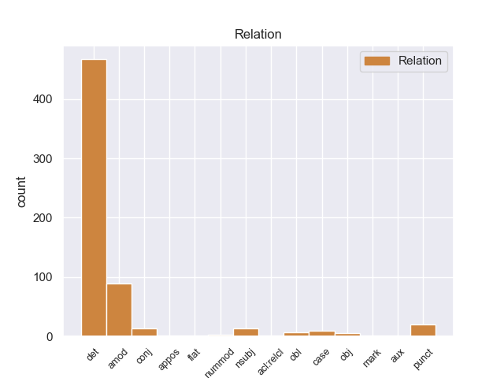
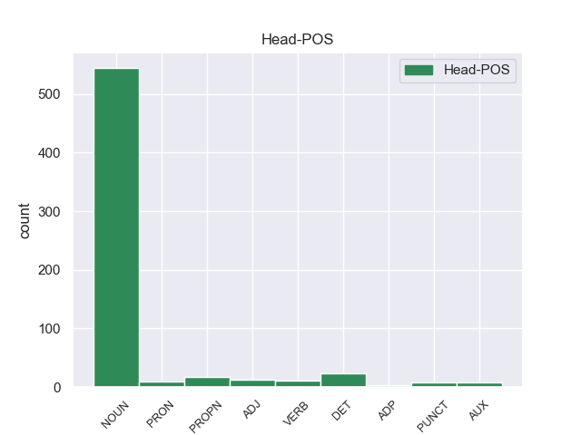
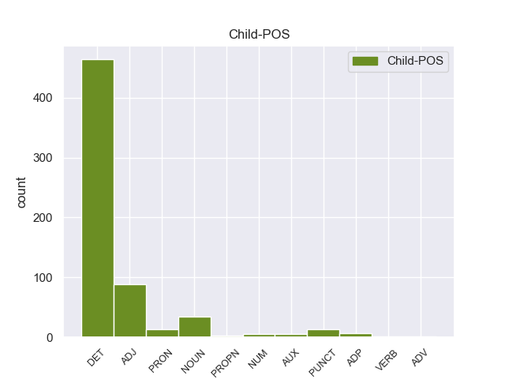

Distribution of features within this leaf



Agreement Rules sorted by frequency.
- When the dependent token is the determiner(det) of the head token, and the dependent token is DET.
1 Αυτό _ _ _ _ 0 _ _ _
2 μπορεί _ _ _ _ 0 _ _ _
3 να _ _ _ _ 0 _ _ _
4 μην _ _ _ _ 0 _ _ _
5 οδηγήσει _ _ _ _ 0 _ _ _
6 σ _ _ _ _ 0 _ _ _
7 τη _ _ _ _ 0 _ _ _
8 λήξη _ _ _ _ 0 _ _ _
9 του _ _ _ _ 0 _ _ _
10 εν _ _ _ _ 0 _ _ _
11 λόγω _ _ _ _ 0 _ _ _
12 ζητήματος ζητήματοςς NOUN _ Case=Acc|Gender=Fem|Number=Sing 0 _ _ _
13 αλλά _ _ _ _ 0 _ _ _
14 , _ _ _ _ 0 _ _ _
15 σ _ _ _ _ 0 _ _ _
16 τη _ _ _ _ 0 _ _ _
17 μορφή _ _ _ _ 0 _ _ _
18 υπό _ _ _ _ 0 _ _ _
19 την ο DET _ Case=Acc|Gender=Fem|Number=Sing 12 det _ _
20 οποία _ _ _ _ 0 _ _ _
21 την _ _ _ _ 0 _ _ _
22 λάβαμε _ _ _ _ 0 _ _ _
23 , _ _ _ _ 0 _ _ _
24 αυτή _ _ _ _ 0 _ _ _
25 η _ _ _ _ 0 _ _ _
26 αίτηση _ _ _ _ 0 _ _ _
27 άρσης _ _ _ _ 0 _ _ _
28 της _ _ _ _ 0 _ _ _
29 ασυλίας _ _ _ _ 0 _ _ _
30 ήταν _ _ _ _ 0 _ _ _
31 , _ _ _ _ 0 _ _ _
32 κατά _ _ _ _ 0 _ _ _
33 την _ _ _ _ 0 _ _ _
34 άποψη _ _ _ _ 0 _ _ _
35 της _ _ _ _ 0 _ _ _
36 Επιτροπής _ _ _ _ 0 _ _ _
37 Νομικών _ _ _ _ 0 _ _ _
38 Θεμάτων _ _ _ _ 0 _ _ _
39 , _ _ _ _ 0 _ _ _
40 απαράδεκτη _ _ _ _ 0 _ _ _
41 , _ _ _ _ 0 _ _ _
42 άποψη _ _ _ _ 0 _ _ _
43 την _ _ _ _ 0 _ _ _
44 οποία _ _ _ _ 0 _ _ _
45 συνιστώ _ _ _ _ 0 _ _ _
46 σ _ _ _ _ 0 _ _ _
47 το _ _ _ _ 0 _ _ _
48 Σώμα _ _ _ _ 0 _ _ _
49 να _ _ _ _ 0 _ _ _
50 υιοθετήσει _ _ _ _ 0 _ _ _
51 . _ _ _ _ 0 _ _ _
1 Για _ _ _ _ 0 _ _ _
2 παράδειγμα _ _ _ _ 0 _ _ _
3 , _ _ _ _ 0 _ _ _
4 οι _ _ _ _ 0 _ _ _
5 μεταφορές _ _ _ _ 0 _ _ _
6 είναι _ _ _ _ 0 _ _ _
7 σήμερα _ _ _ _ 0 _ _ _
8 η _ _ _ _ 0 _ _ _
9 κύρια _ _ _ _ 0 _ _ _
10 πηγή _ _ _ _ 0 _ _ _
11 ατμοσφαιρικής _ _ _ _ 0 _ _ _
12 ρύπανσης _ _ _ _ 0 _ _ _
13 σ _ _ _ _ 0 _ _ _
14 τις _ _ _ _ 0 _ _ _
15 αστικές _ _ _ _ 0 _ _ _
16 περιοχές _ _ _ _ 0 _ _ _
17 , _ _ _ _ 0 _ _ _
18 και _ _ _ _ 0 _ _ _
19 παρά _ _ _ _ 0 _ _ _
20 τις _ _ _ _ 0 _ _ _
21 βελτιώσεις _ _ _ _ 0 _ _ _
22 σ _ _ _ _ 0 _ _ _
23 την _ _ _ _ 0 _ _ _
24 ποιότητα _ _ _ _ 0 _ _ _
25 του _ _ _ _ 0 _ _ _
26 αέρα _ _ _ _ 0 _ _ _
27 σ _ _ _ _ 0 _ _ _
28 την _ _ _ _ 0 _ _ _
29 Ευρώπη _ _ _ _ 0 _ _ _
30 κατά _ _ _ _ 0 _ _ _
31 την _ _ _ _ 0 _ _ _
32 τελευταία _ _ _ _ 0 _ _ _
33 δεκαετία _ _ _ _ 0 _ _ _
34 , _ _ _ _ 0 _ _ _
35 σχεδόν _ _ _ _ 0 _ _ _
36 το _ _ _ _ 0 _ _ _
37 90% _ _ _ _ 0 _ _ _
38 του _ _ _ _ 0 _ _ _
39 αστικού αστικούς ADJ _ Case=Gen|Gender=Fem|Number=Sing 47 amod _ _
40 πληθυσμού _ _ _ _ 0 _ _ _
41 εξακολουθεί _ _ _ _ 0 _ _ _
42 να _ _ _ _ 0 _ _ _
43 εκτίθεται _ _ _ _ 0 _ _ _
44 σε _ _ _ _ 0 _ _ _
45 πολύ _ _ _ _ 0 _ _ _
46 υψηλά _ _ _ _ 0 _ _ _
47 επίπεδα επίπεδ NOUN _ Case=Acc|Gender=Fem|Number=Sing 0 _ _ _
48 σωματιδίων _ _ _ _ 0 _ _ _
49 , _ _ _ _ 0 _ _ _
50 διοξειδίου _ _ _ _ 0 _ _ _
51 του _ _ _ _ 0 _ _ _
52 αζώτου _ _ _ _ 0 _ _ _
53 , _ _ _ _ 0 _ _ _
54 βενζολίου _ _ _ _ 0 _ _ _
55 και _ _ _ _ 0 _ _ _
56 όζοντος _ _ _ _ 0 _ _ _
57 σ _ _ _ _ 0 _ _ _
58 τον _ _ _ _ 0 _ _ _
59 ατμοσφαιρικό _ _ _ _ 0 _ _ _
60 αέρα _ _ _ _ 0 _ _ _
61 , _ _ _ _ 0 _ _ _
62 τα _ _ _ _ 0 _ _ _
63 οποία _ _ _ _ 0 _ _ _
64 ενδέχεται _ _ _ _ 0 _ _ _
65 να _ _ _ _ 0 _ _ _
66 επηρεάζουν _ _ _ _ 0 _ _ _
67 τις _ _ _ _ 0 _ _ _
68 αναπνευστικές _ _ _ _ 0 _ _ _
69 λειτουργίες _ _ _ _ 0 _ _ _
70 και _ _ _ _ 0 _ _ _
71 να _ _ _ _ 0 _ _ _
72 οδηγούν _ _ _ _ 0 _ _ _
73 σε _ _ _ _ 0 _ _ _
74 άλλα _ _ _ _ 0 _ _ _
75 προβλήματα _ _ _ _ 0 _ _ _
76 υγείας _ _ _ _ 0 _ _ _
77 και _ _ _ _ 0 _ _ _
78 παθήσεις _ _ _ _ 0 _ _ _
79 , _ _ _ _ 0 _ _ _
80 όπως _ _ _ _ 0 _ _ _
81 ο _ _ _ _ 0 _ _ _
82 καρκίνος _ _ _ _ 0 _ _ _
83 και _ _ _ _ 0 _ _ _
84 οι _ _ _ _ 0 _ _ _
85 καρδιαγγειακές _ _ _ _ 0 _ _ _
86 παθήσεις _ _ _ _ 0 _ _ _
87 . _ _ _ _ 0 _ _ _
1 Τόσο _ _ _ _ 0 _ _ _
2 το _ _ _ _ 0 _ _ _
3 ζήτημα _ _ _ _ 0 _ _ _
4 της _ _ _ _ 0 _ _ _
5 ασυλίας _ _ _ _ 0 _ _ _
6 όσο _ _ _ _ 0 _ _ _
7 και _ _ _ _ 0 _ _ _
8 η _ _ _ _ 0 _ _ _
9 αίτηση _ _ _ _ 0 _ _ _
10 για _ _ _ _ 0 _ _ _
11 άρση _ _ _ _ 0 _ _ _
12 της _ _ _ _ 0 _ _ _
13 έχουν _ _ _ _ 0 _ _ _
14 σχέση _ _ _ _ 0 _ _ _
15 μόνο _ _ _ _ 0 _ _ _
16 με _ _ _ _ 0 _ _ _
17 το _ _ _ _ 0 _ _ _
18 εάν _ _ _ _ 0 _ _ _
19 το _ _ _ _ 0 _ _ _
20 Δικαστήριο _ _ _ _ 0 _ _ _
21 μπορεί _ _ _ _ 0 _ _ _
22 να _ _ _ _ 0 _ _ _
23 εκδώσει _ _ _ _ 0 _ _ _
24 δεσμευτικά _ _ _ _ 0 _ _ _
25 βουλεύματα _ _ _ _ 0 _ _ _
26 για _ _ _ _ 0 _ _ _
27 τον _ _ _ _ 0 _ _ _
28 περιορισμό _ _ _ _ 0 _ _ _
29 της _ _ _ _ 0 _ _ _
30 ελεύθερης _ _ _ _ 0 _ _ _
31 μετακίνησης _ _ _ _ 0 _ _ _
32 των _ _ _ _ 0 _ _ _
33 βουλευτών _ _ _ _ 0 _ _ _
34 του _ _ _ _ 0 _ _ _
35 Ευρωπαϊκού _ _ _ _ 0 _ _ _
36 Κοινοβουλίου _ _ _ _ 0 _ _ _
37 ή _ _ _ _ 0 _ _ _
38 την _ _ _ _ 0 _ _ _
39 ελευθερία _ _ _ _ 0 _ _ _
40 τους _ _ _ _ 0 _ _ _
41 να _ _ _ _ 0 _ _ _
42 έρχονται _ _ _ _ 0 _ _ _
43 σε _ _ _ _ 0 _ _ _
44 επικοινωνία _ _ _ _ 0 _ _ _
45 με _ _ _ _ 0 _ _ _
46 άλλα άλλος PRON PRON Case=Acc|Gender=Neut|Number=Plur|Person=3|PronType=Ind 47 det _ _
47 πρόσωπα πρόσωπο NOUN NOUN Case=Acc|Gender=Neut|Number=Plur 0 _ _ _
48 . _ _ _ _ 0 _ _ _
1 . . PUNCT _ Case=Acc|Definite=Def|Gender=Fem|Number=Sing|PronType=Art 2 punct _ _
2 ( (ς PUNCT _ Case=Acc|Definite=Def|Gender=Fem|Number=Sing|PronType=Art 0 _ _ _
3 EN _ _ _ _ 0 _ _ _
4 ) _ _ _ _ 0 _ _ _
1 Πρέπει _ _ _ _ 0 _ _ _
2 να _ _ _ _ 0 _ _ _
3 επισημανθεί _ _ _ _ 0 _ _ _
4 ότι _ _ _ _ 0 _ _ _
5 ο _ _ _ _ 0 _ _ _
6 Εισαγγελέας _ _ _ _ 0 _ _ _
7 Πλημμελειοδικών _ _ _ _ 0 _ _ _
8 υποστήριξε _ _ _ _ 0 _ _ _
9 σθεναρά _ _ _ _ 0 _ _ _
10 την _ _ _ _ 0 _ _ _
11 αίτηση _ _ _ _ 0 _ _ _
12 επιβολής _ _ _ _ 0 _ _ _
13 μέτρων _ _ _ _ 0 _ _ _
14 δικαστικής _ _ _ _ 0 _ _ _
15 επιτήρησης _ _ _ _ 0 _ _ _
16 που _ _ _ _ 0 _ _ _
17 υπέβαλαν _ _ _ _ 0 _ _ _
18 οι _ _ _ _ 0 _ _ _
19 ανακριτές _ _ _ _ 0 _ _ _
20 , _ _ _ _ 0 _ _ _
21 υπογραμμίζοντας _ _ _ _ 0 _ _ _
22 τη _ _ _ _ 0 _ _ _
23 σοβαρότητα σοβαρότητα NOUN NOUN Case=Acc|Gender=Fem|Number=Sing 0 _ _ _
24 και _ _ _ _ 0 _ _ _
25 τη _ _ _ _ 0 _ _ _
26 φύση φύση NOUN NOUN Case=Acc|Gender=Fem|Number=Sing 23 conj _ _
27 της _ _ _ _ 0 _ _ _
28 υπόθεσης _ _ _ _ 0 _ _ _
29 και _ _ _ _ 0 _ _ _
30 χαρακτηρίζοντας _ _ _ _ 0 _ _ _
31 μάλιστα _ _ _ _ 0 _ _ _
32 την _ _ _ _ 0 _ _ _
33 αίτηση _ _ _ _ 0 _ _ _
34 αυτή _ _ _ _ 0 _ _ _
35 ως _ _ _ _ 0 _ _ _
36 απαραίτητη _ _ _ _ 0 _ _ _
37 επί _ _ _ _ 0 _ _ _
38 της _ _ _ _ 0 _ _ _
39 αρχής _ _ _ _ 0 _ _ _
40 . _ _ _ _ 0 _ _ _
1 Μεταξύ _ _ _ _ 0 _ _ _
2 άλλων _ _ _ _ 0 _ _ _
3 , _ _ _ _ 0 _ _ _
4 σ _ _ _ _ 0 _ _ _
5 την _ _ _ _ 0 _ _ _
6 ανακοίνωση νακοίνωση NOUN _ Case=Acc|Gender=Fem|Number=Sing 7 nsubj _ _
7 αναφέρεται ναφέρεται DET _ Case=Acc|Definite=Def|Gender=Fem|Number=Sing|PronType=Art 0 _ _ _
8 : _ _ _ _ 0 _ _ _
1 Η _ _ _ _ 0 _ _ _
2 Ρωσία _ _ _ _ 0 _ _ _
3 υπέδειξε υπέδειξες NOUN _ Case=Acc|Gender=Fem|Number=Sing 0 _ _ _
4 τον _ _ _ _ 0 _ _ _
5 γιό _ _ _ _ 0 _ _ _
6 του _ _ _ _ 0 _ _ _
7 βασιλιά _ _ _ _ 0 _ _ _
8 των _ _ _ _ 0 _ _ _
9 Ελλήνων _ _ _ _ 0 _ _ _
10 Γεωργίου _ _ _ _ 0 _ _ _
11 του _ _ _ _ 0 _ _ _
12 Α' Α' DET _ Case=Acc|Gender=Fem|Number=Sing 3 obj _ _
13 , _ _ _ _ 0 _ _ _
14 τον _ _ _ _ 0 _ _ _
15 πρίγκιπα _ _ _ _ 0 _ _ _
16 Γεώργιο _ _ _ _ 0 _ _ _
17 , _ _ _ _ 0 _ _ _
18 ο _ _ _ _ 0 _ _ _
19 οποίος _ _ _ _ 0 _ _ _
20 και _ _ _ _ 0 _ _ _
21 επελέγη _ _ _ _ 0 _ _ _
22 τελικά _ _ _ _ 0 _ _ _
23 . _ _ _ _ 0 _ _ _
1 Όντας _ _ _ _ 0 _ _ _
2 σ _ _ _ _ 0 _ _ _
3 τη _ _ _ _ 0 _ _ _
4 Γαλλία ο AUX _ Case=Acc|Definite=Def|Gender=Fem|Number=Sing|PronType=Art 0 _ _ _
5 , _ _ _ _ 0 _ _ _
6 ο _ _ _ _ 0 _ _ _
7 Βενιζέλος _ _ _ _ 0 _ _ _
8 εξελέγη _ _ _ _ 0 _ _ _
9 μέλος μέλο DET _ Case=Acc|Gender=Fem|Number=Sing 4 case _ _
10 της _ _ _ _ 0 _ _ _
11 Γαλλικής _ _ _ _ 0 _ _ _
12 Ακαδημίας _ _ _ _ 0 _ _ _
13 . _ _ _ _ 0 _ _ _
1 Ο _ _ _ _ 0 _ _ _
2 Μιτ _ _ _ _ 0 _ _ _
3 Ρόμνεϊ _ _ _ _ 0 _ _ _
4 έλαβε _ _ _ _ 0 _ _ _
5 το _ _ _ _ 0 _ _ _
6 45% _ _ _ _ 0 _ _ _
7 των _ _ _ _ 0 _ _ _
8 ψήφων _ _ _ _ 0 _ _ _
9 , _ _ _ _ 0 _ _ _
10 δέκα δέκα NUM NUM Case=Acc|Gender=Fem|Number=Plur|NumType=Card 12 nummod _ _
11 ποσοστιαίες _ _ _ _ 0 _ _ _
12 μονάδες μονάδα NOUN NOUN Case=Acc|Gender=Fem|Number=Plur 0 _ _ _
13 περισσότερες _ _ _ _ 0 _ _ _
14 από _ _ _ _ 0 _ _ _
15 τον _ _ _ _ 0 _ _ _
16 Ρικ _ _ _ _ 0 _ _ _
17 Σαντόρουμ _ _ _ _ 0 _ _ _
18 . _ _ _ _ 0 _ _ _
1 Ελλάδα λλάδα DET _ Case=Acc|Definite=Def|Gender=Fem|Number=Sing|PronType=Art 0 _ _ _
2 : _ _ _ _ 0 _ _ _
3 61 _ _ _ _ 0 _ _ _
4 οι _ _ _ _ 0 _ _ _
5 νεκροί νεκρο NOUN _ Case=Gen|Gender=Fem|Number=Sing 1 obl _ _
6 από _ _ _ _ 0 _ _ _
7 γρίπη _ _ _ _ 0 _ _ _
8 . _ _ _ _ 0 _ _ _
1 Όταν _ _ _ _ 0 _ _ _
2 η _ _ _ _ 0 _ _ _
3 Γερμανία ο DET _ Case=Acc|Definite=Def|Gender=Fem|Number=Sing|PronType=Art 4 nsubj _ _
4 υπέγραψε υπέγραψες NOUN _ Case=Acc|Gender=Fem|Number=Sing 0 _ _ _
5 ανακωχή _ _ _ _ 0 _ _ _
6 , _ _ _ _ 0 _ _ _
7 συνήλθε _ _ _ _ 0 _ _ _
8 σ _ _ _ _ 0 _ _ _
9 το _ _ _ _ 0 _ _ _
10 Παρίσι _ _ _ _ 0 _ _ _
11 η _ _ _ _ 0 _ _ _
12 συνδιάσκεψη _ _ _ _ 0 _ _ _
13 της _ _ _ _ 0 _ _ _
14 ειρήνης _ _ _ _ 0 _ _ _
15 , _ _ _ _ 0 _ _ _
16 όπου _ _ _ _ 0 _ _ _
17 ο _ _ _ _ 0 _ _ _
18 Βενιζέλος _ _ _ _ 0 _ _ _
19 παρέστη _ _ _ _ 0 _ _ _
20 ως _ _ _ _ 0 _ _ _
21 αντιπρόσωπος _ _ _ _ 0 _ _ _
22 της _ _ _ _ 0 _ _ _
23 Ελλάδας _ _ _ _ 0 _ _ _
24 και _ _ _ _ 0 _ _ _
25 πρόβαλε _ _ _ _ 0 _ _ _
26 τις _ _ _ _ 0 _ _ _
27 αξιώσεις _ _ _ _ 0 _ _ _
28 της _ _ _ _ 0 _ _ _
29 χώρας _ _ _ _ 0 _ _ _
30 μας _ _ _ _ 0 _ _ _
31 , _ _ _ _ 0 _ _ _
32 οι _ _ _ _ 0 _ _ _
33 οποίες _ _ _ _ 0 _ _ _
34 έγιναν _ _ _ _ 0 _ _ _
35 σ _ _ _ _ 0 _ _ _
36 το _ _ _ _ 0 _ _ _
37 σύνολό _ _ _ _ 0 _ _ _
38 τους _ _ _ _ 0 _ _ _
39 δεκτές _ _ _ _ 0 _ _ _
40 με _ _ _ _ 0 _ _ _
41 τις _ _ _ _ 0 _ _ _
42 συνθήκες _ _ _ _ 0 _ _ _
43 του _ _ _ _ 0 _ _ _
44 Νεϊγύ _ _ _ _ 0 _ _ _
45 ( _ _ _ _ 0 _ _ _
46 27_Νοεμβρίου_1919 _ _ _ _ 0 _ _ _
47 ) _ _ _ _ 0 _ _ _
48 και _ _ _ _ 0 _ _ _
49 των _ _ _ _ 0 _ _ _
50 Σεβρών _ _ _ _ 0 _ _ _
51 ( _ _ _ _ 0 _ _ _
52 10_Αυγούστου_1920 _ _ _ _ 0 _ _ _
53 ) _ _ _ _ 0 _ _ _
54 . _ _ _ _ 0 _ _ _
1 Ό,τι _ _ _ _ 0 _ _ _
2 και _ _ _ _ 0 _ _ _
3 να _ _ _ _ 0 _ _ _
4 σήμαινε _ _ _ _ 0 _ _ _
5 το _ _ _ _ 0 _ _ _
6 όνομα _ _ _ _ 0 _ _ _
7 Μακεδονία _ _ _ _ 0 _ _ _
8 σ _ _ _ _ 0 _ _ _
9 την _ _ _ _ 0 _ _ _
10 αρχαιότητα _ _ _ _ 0 _ _ _
11 , _ _ _ _ 0 _ _ _
12 σ _ _ _ _ 0 _ _ _
13 τα _ _ _ _ 0 _ _ _
14 τέλη _ _ _ _ 0 _ _ _
15 του _ _ _ _ 0 _ _ _
16 19ου _ _ _ _ 0 _ _ _
17 αιώνα _ _ _ _ 0 _ _ _
18 δήλωνε _ _ _ _ 0 _ _ _
19 τη _ _ _ _ 0 _ _ _
20 περιοχή _ _ _ _ 0 _ _ _
21 που _ _ _ _ 0 _ _ _
22 εκτεινόταν εκτεινόταν VERB _ Case=Acc|Gender=Fem|Number=Sing 0 _ _ _
23 δυτικά _ _ _ _ 0 _ _ _
24 από _ _ _ _ 0 _ _ _
25 τις _ _ _ _ 0 _ _ _
26 λίμνες _ _ _ _ 0 _ _ _
27 Οχρίδα _ _ _ _ 0 _ _ _
28 και _ _ _ _ 0 _ _ _
29 Πρέσπα _ _ _ _ 0 _ _ _
30 μέχρι _ _ _ _ 0 _ _ _
31 τον _ _ _ _ 0 _ _ _
32 ποταμό _ _ _ _ 0 _ _ _
33 Νέστο _ _ _ _ 0 _ _ _
34 ανατολικά _ _ _ _ 0 _ _ _
35 , _ _ _ _ 0 _ _ _
36 και _ _ _ _ 0 _ _ _
37 από _ _ _ _ 0 _ _ _
38 τα _ _ _ _ 0 _ _ _
39 βουνά _ _ _ _ 0 _ _ _
40 του _ _ _ _ 0 _ _ _
41 Σαρ _ _ _ _ 0 _ _ _
42 , _ _ _ _ 0 _ _ _
43 της _ _ _ _ 0 _ _ _
44 Ρίλας _ _ _ _ 0 _ _ _
45 και _ _ _ _ 0 _ _ _
46 της _ _ _ _ 0 _ _ _
47 Ροδόπης _ _ _ _ 0 _ _ _
48 από _ _ _ _ 0 _ _ _
49 βορρά βορός NOUN _ Case=Acc|Gender=Fem|Number=Sing 22 case _ _
50 μέχρι _ _ _ _ 0 _ _ _
51 την _ _ _ _ 0 _ _ _
52 Πίνδο _ _ _ _ 0 _ _ _
53 , _ _ _ _ 0 _ _ _
54 τον _ _ _ _ 0 _ _ _
55 Όλυμπο _ _ _ _ 0 _ _ _
56 και _ _ _ _ 0 _ _ _
57 το _ _ _ _ 0 _ _ _
58 Αιγαίο _ _ _ _ 0 _ _ _
59 προς _ _ _ _ 0 _ _ _
60 νότο _ _ _ _ 0 _ _ _
61 . _ _ _ _ 0 _ _ _
1 Το _ _ _ _ 0 _ _ _
2 Κοινοβούλιο _ _ _ _ 0 _ _ _
3 θεώρησε _ _ _ _ 0 _ _ _
4 κατά _ _ _ _ 0 _ _ _
5 την _ _ _ _ 0 _ _ _
6 πρώτη πρώτος NUM NUM Case=Acc|Gender=Fem|Number=Sing|NumType=Ord 7 amod _ _
7 ανάγνωση ανάγνωση NOUN NOUN Case=Acc|Gender=Fem|Number=Sing 0 _ _ _
8 ότι _ _ _ _ 0 _ _ _
9 η _ _ _ _ 0 _ _ _
10 εφαρμογή _ _ _ _ 0 _ _ _
11 του _ _ _ _ 0 _ _ _
12 κανονισμού _ _ _ _ 0 _ _ _
13 σε _ _ _ _ 0 _ _ _
14 οδηγούς _ _ _ _ 0 _ _ _
15 από _ _ _ _ 0 _ _ _
16 χώρες _ _ _ _ 0 _ _ _
17 εκτός _ _ _ _ 0 _ _ _
18 ΕΕ _ _ _ _ 0 _ _ _
19 αφενός _ _ _ _ 0 _ _ _
20 και _ _ _ _ 0 _ _ _
21 σε _ _ _ _ 0 _ _ _
22 οδηγούς _ _ _ _ 0 _ _ _
23 από _ _ _ _ 0 _ _ _
24 κράτη _ _ _ _ 0 _ _ _
25 μέλη _ _ _ _ 0 _ _ _
26 της _ _ _ _ 0 _ _ _
27 ΕΕ _ _ _ _ 0 _ _ _
28 αφετέρου _ _ _ _ 0 _ _ _
29 θα _ _ _ _ 0 _ _ _
30 πρέπει _ _ _ _ 0 _ _ _
31 να _ _ _ _ 0 _ _ _
32 γίνει _ _ _ _ 0 _ _ _
33 σταδιακά _ _ _ _ 0 _ _ _
34 , _ _ _ _ 0 _ _ _
35 δεδομένων _ _ _ _ 0 _ _ _
36 των _ _ _ _ 0 _ _ _
37 διοικητικών _ _ _ _ 0 _ _ _
38 μέτρων _ _ _ _ 0 _ _ _
39 τα _ _ _ _ 0 _ _ _
40 οποία _ _ _ _ 0 _ _ _
41 θα _ _ _ _ 0 _ _ _
42 πρέπει _ _ _ _ 0 _ _ _
43 να _ _ _ _ 0 _ _ _
44 υιοθετήσουν _ _ _ _ 0 _ _ _
45 τα _ _ _ _ 0 _ _ _
46 κράτη _ _ _ _ 0 _ _ _
47 μέλη _ _ _ _ 0 _ _ _
48 . _ _ _ _ 0 _ _ _
1 Ωστόσο _ _ _ _ 0 _ _ _
2 , _ _ _ _ 0 _ _ _
3 η _ _ _ _ 0 _ _ _
4 Αντιπολίτευση _ _ _ _ 0 _ _ _
5 ( _ _ _ _ 0 _ _ _
6 κυρίως _ _ _ _ 0 _ _ _
7 οι _ _ _ _ 0 _ _ _
8 Κομμουνιστές _ _ _ _ 0 _ _ _
9 ) _ _ _ _ 0 _ _ _
10 απαιτούν _ _ _ _ 0 _ _ _
11 επανάληψη _ _ _ _ 0 _ _ _
12 των _ _ _ _ 0 _ _ _
13 προεδρικών προεδρικός ADJ ADJ Case=Gen|Gender=Fem|Number=Plur 0 _ _ _
14 και _ _ _ _ 0 _ _ _
15 των _ _ _ _ 0 _ _ _
16 βουλευτικών βουλευτικός ADJ ADJ Case=Gen|Gender=Fem|Number=Plur 13 conj _ _
17 εκλογών _ _ _ _ 0 _ _ _
18 , _ _ _ _ 0 _ _ _
19 ενώ _ _ _ _ 0 _ _ _
20 ο _ _ _ _ 0 _ _ _
21 ΟΑΣΕ _ _ _ _ 0 _ _ _
22 κατήγγειλε _ _ _ _ 0 _ _ _
23 αρκετές _ _ _ _ 0 _ _ _
24 παρατυπίες _ _ _ _ 0 _ _ _
25 . _ _ _ _ 0 _ _ _
1 Το _ _ _ _ 0 _ _ _
2 οικονομικό _ _ _ _ 0 _ _ _
3 όφελος όφελοςς NOUN _ Case=Gen|Gender=Fem|Number=Sing 0 _ _ _
4 πρέπει _ _ _ _ 0 _ _ _
5 να _ _ _ _ 0 _ _ _
6 βρίσκεται _ _ _ _ 0 _ _ _
7 σαφώς _ _ _ _ 0 _ _ _
8 από _ _ _ _ 0 _ _ _
9 την _ _ _ _ 0 _ _ _
10 πλευρά πλευρ AUX _ Case=Acc|Gender=Fem|Number=Sing 3 case _ _
11 της _ _ _ _ 0 _ _ _
12 αναθέτουσας _ _ _ _ 0 _ _ _
13 αρχής _ _ _ _ 0 _ _ _
14 . _ _ _ _ 0 _ _ _
1 Εδώ _ _ _ _ 0 _ _ _
2 θα _ _ _ _ 0 _ _ _
3 αναφερθώ _ _ _ _ 0 _ _ _
4 σε _ _ _ _ 0 _ _ _
5 ένα _ _ _ _ 0 _ _ _
6 μόνο _ _ _ _ 0 _ _ _
7 παράδειγμα _ _ _ _ 0 _ _ _
8 και _ _ _ _ 0 _ _ _
9 συγκεκριμένα _ _ _ _ 0 _ _ _
10 σ _ _ _ _ 0 _ _ _
11 τη _ _ _ _ 0 _ _ _
12 ρύθμιση ρύθμιση NOUN _ Case=Acc|Gender=Fem|Number=Sing 0 _ _ _
13 για _ _ _ _ 0 _ _ _
14 την _ _ _ _ 0 _ _ _
15 εφαρμογή _ _ _ _ 0 _ _ _
16 της _ _ _ _ 0 _ _ _
17 αρχής _ _ _ _ 0 _ _ _
18 της _ _ _ _ 0 _ _ _
19 αναλογικότητας _ _ _ _ 0 _ _ _
20 κατά _ _ _ _ 0 _ _ _
21 την _ _ _ _ 0 _ _ _
22 αποποίηση αποποίησης NOUN _ Case=Acc|Gender=Fem|Number=Sing 12 amod _ _
23 της _ _ _ _ 0 _ _ _
24 ανάκτησης _ _ _ _ 0 _ _ _
25 κονδυλίων _ _ _ _ 0 _ _ _
26 . _ _ _ _ 0 _ _ _
1 Βρίσκεται _ _ _ _ 0 _ _ _
2 12 _ _ _ _ 0 _ _ _
3 χλμ. _ _ _ _ 0 _ _ _
4 νοτιοδυτικά _ _ _ _ 0 _ _ _
5 της _ _ _ _ 0 _ _ _
6 Χώρας _ _ _ _ 0 _ _ _
7 της _ _ _ _ 0 _ _ _
8 Σκιάθου _ _ _ _ 0 _ _ _
9 και _ _ _ _ 0 _ _ _
10 έχει _ _ _ _ 0 _ _ _
11 μήκος μήκος DET _ Case=Acc|Gender=Fem|Number=Sing 0 _ _ _
12 3 _ _ _ _ 0 _ _ _
13 χλμ. χλμ. DET _ Case=Gen|Definite=Def|Gender=Fem|Number=Sing|PronType=Art 11 mark _ _
1 Το _ _ _ _ 0 _ _ _
2 Θαλάσσιο _ _ _ _ 0 _ _ _
3 Πάρκο _ _ _ _ 0 _ _ _
4 Αλοννήσου _ _ _ _ 0 _ _ _
5 είναι _ _ _ _ 0 _ _ _
6 το _ _ _ _ 0 _ _ _
7 πρώτο _ _ _ _ 0 _ _ _
8 σ _ _ _ _ 0 _ _ _
9 την _ _ _ _ 0 _ _ _
10 Ελλάδα _ _ _ _ 0 _ _ _
11 και _ _ _ _ 0 _ _ _
12 το _ _ _ _ 0 _ _ _
13 μεγαλύτερο _ _ _ _ 0 _ _ _
14 σ _ _ _ _ 0 _ _ _
15 την _ _ _ _ 0 _ _ _
16 Ευρώπη _ _ _ _ 0 _ _ _
17 και _ _ _ _ 0 _ _ _
18 τη _ _ _ _ 0 _ _ _
19 Μεσόγειο _ _ _ _ 0 _ _ _
20 , _ _ _ _ 0 _ _ _
21 το _ _ _ _ 0 _ _ _
22 οποίο _ _ _ _ 0 _ _ _
23 φιλοξενεί _ _ _ _ 0 _ _ _
24 τη _ _ _ _ 0 _ _ _
25 μεσογειακή _ _ _ _ 0 _ _ _
26 φώκια _ _ _ _ 0 _ _ _
27 monachus _ _ _ _ 0 _ _ _
28 - _ _ _ _ 0 _ _ _
29 monachus _ _ _ _ 0 _ _ _
30 ένα _ _ _ _ 0 _ _ _
31 είδος _ _ _ _ 0 _ _ _
32 που _ _ _ _ 0 _ _ _
33 εκλείπει _ _ _ _ 0 _ _ _
34 από _ _ _ _ 0 _ _ _
35 τη _ _ _ _ 0 _ _ _
36 Δυτική _ _ _ _ 0 _ _ _
37 Μεσόγειο _ _ _ _ 0 _ _ _
38 ( _ _ _ _ 0 _ _ _
39 εδώ _ _ _ _ 0 _ _ _
40 ο _ _ _ _ 0 _ _ _
41 πληθυσμός _ _ _ _ 0 _ _ _
42 φτάνει _ _ _ _ 0 _ _ _
43 τις _ _ _ _ 0 _ _ _
44 250 _ _ _ _ 0 _ _ _
45 ) _ _ _ _ 0 _ _ _
46 και _ _ _ _ 0 _ _ _
47 άλλα άλλα ADJ _ Case=Acc|Definite=Def|Gender=Fem|Number=Sing|PronType=Art 75 det _ _
48 σπάνια _ _ _ _ 0 _ _ _
49 είδη _ _ _ _ 0 _ _ _
50 χλωρίδας _ _ _ _ 0 _ _ _
51 και _ _ _ _ 0 _ _ _
52 πανίδας _ _ _ _ 0 _ _ _
53 όπως _ _ _ _ 0 _ _ _
54 η _ _ _ _ 0 _ _ _
55 αγριελιά _ _ _ _ 0 _ _ _
56 , _ _ _ _ 0 _ _ _
57 το _ _ _ _ 0 _ _ _
58 θαμνοκυπάρισσο _ _ _ _ 0 _ _ _
59 , _ _ _ _ 0 _ _ _
60 τα _ _ _ _ 0 _ _ _
61 ποσειδώνια _ _ _ _ 0 _ _ _
62 φύκη _ _ _ _ 0 _ _ _
63 αλλά _ _ _ _ 0 _ _ _
64 και _ _ _ _ 0 _ _ _
65 το _ _ _ _ 0 _ _ _
66 αγριοκάτσικο _ _ _ _ 0 _ _ _
67 των _ _ _ _ 0 _ _ _
68 Γιούρων _ _ _ _ 0 _ _ _
69 , _ _ _ _ 0 _ _ _
70 το _ _ _ _ 0 _ _ _
71 γεράκι _ _ _ _ 0 _ _ _
72 μαυροπετρίτης _ _ _ _ 0 _ _ _
73 , _ _ _ _ 0 _ _ _
74 τον _ _ _ _ 0 _ _ _
75 αιγόγλαρο Αιγόγλαρο ADJ _ Case=Acc|Gender=Fem|Number=Sing 0 _ _ _
76 . _ _ _ _ 0 _ _ _
1 Τελικά _ _ _ _ 0 _ _ _
2 , _ _ _ _ 0 _ _ _
3 το _ _ _ _ 0 _ _ _
4 1576 1576 DET _ Case=Acc|Definite=Def|Gender=Fem|Number=Sing|PronType=Art 7 punct _ _
5 μετά _ _ _ _ 0 _ _ _
6 από _ _ _ _ 0 _ _ _
7 αίτημα αίτημα NOUN _ Case=Acc|Gender=Fem|Number=Sing 0 _ _ _
8 της _ _ _ _ 0 _ _ _
9 Κέρκυρας _ _ _ _ 0 _ _ _
10 , _ _ _ _ 0 _ _ _
11 το _ _ _ _ 0 _ _ _
12 νησί _ _ _ _ 0 _ _ _
13 περιήλθε _ _ _ _ 0 _ _ _
14 υπό _ _ _ _ 0 _ _ _
15 την _ _ _ _ 0 _ _ _
16 προστασία _ _ _ _ 0 _ _ _
17 της _ _ _ _ 0 _ _ _
18 Βενετίας _ _ _ _ 0 _ _ _
19 . _ _ _ _ 0 _ _ _
1 Δεν _ _ _ _ 0 _ _ _
2 είναι είναις ADP _ Case=Acc|Definite=Def|Gender=Fem|Number=Sing|PronType=Art 5 punct _ _
3 το _ _ _ _ 0 _ _ _
4 μόνο _ _ _ _ 0 _ _ _
5 παράδειγμα παράδειγμας DET _ Case=Acc|Gender=Fem|Number=Sing 0 _ _ _
6 . _ _ _ _ 0 _ _ _
1 Ο _ _ _ _ 0 _ _ _
2 αμερικανός _ _ _ _ 0 _ _ _
3 Υπουργός υπουργός NOUN NOUN Case=Nom|Gender=Masc|Number=Sing 0 _ _ _
4 Οικονομικών _ _ _ _ 0 _ _ _
5 , _ _ _ _ 0 _ _ _
6 Τζακ Τζακ PROPN PROPN Case=Nom|Gender=Masc|Number=Sing 3 appos _ _
7 Λιου _ _ _ _ 0 _ _ _
8 , _ _ _ _ 0 _ _ _
9 δήλωσε _ _ _ _ 0 _ _ _
10 ότι _ _ _ _ 0 _ _ _
11 οι _ _ _ _ 0 _ _ _
12 οικονομικές _ _ _ _ 0 _ _ _
13 κυρώσεις _ _ _ _ 0 _ _ _
14 σε _ _ _ _ 0 _ _ _
15 βάρος _ _ _ _ 0 _ _ _
16 της _ _ _ _ 0 _ _ _
17 Μόσχας _ _ _ _ 0 _ _ _
18 έχουν _ _ _ _ 0 _ _ _
19 ήδη _ _ _ _ 0 _ _ _
20 " _ _ _ _ 0 _ _ _
21 πλήξει _ _ _ _ 0 _ _ _
22 σημαντικά _ _ _ _ 0 _ _ _
23 " _ _ _ _ 0 _ _ _
24 τη _ _ _ _ 0 _ _ _
25 ρωσική _ _ _ _ 0 _ _ _
26 οικονομία _ _ _ _ 0 _ _ _
27 . _ _ _ _ 0 _ _ _
1 Ο _ _ _ _ 0 _ _ _
2 αμερικανός _ _ _ _ 0 _ _ _
3 Υπουργός _ _ _ _ 0 _ _ _
4 Οικονομικών _ _ _ _ 0 _ _ _
5 , _ _ _ _ 0 _ _ _
6 Τζακ Τζακ PROPN PROPN Case=Nom|Gender=Masc|Number=Sing 0 _ _ _
7 Λιου Λιου PROPN PROPN Case=Nom|Gender=Masc|Number=Sing 6 flat _ SpaceAfter=No
8 , _ _ _ _ 0 _ _ _
9 δήλωσε _ _ _ _ 0 _ _ _
10 ότι _ _ _ _ 0 _ _ _
11 οι _ _ _ _ 0 _ _ _
12 οικονομικές _ _ _ _ 0 _ _ _
13 κυρώσεις _ _ _ _ 0 _ _ _
14 σε _ _ _ _ 0 _ _ _
15 βάρος _ _ _ _ 0 _ _ _
16 της _ _ _ _ 0 _ _ _
17 Μόσχας _ _ _ _ 0 _ _ _
18 έχουν _ _ _ _ 0 _ _ _
19 ήδη _ _ _ _ 0 _ _ _
20 " _ _ _ _ 0 _ _ _
21 πλήξει _ _ _ _ 0 _ _ _
22 σημαντικά _ _ _ _ 0 _ _ _
23 " _ _ _ _ 0 _ _ _
24 τη _ _ _ _ 0 _ _ _
25 ρωσική _ _ _ _ 0 _ _ _
26 οικονομία _ _ _ _ 0 _ _ _
27 . _ _ _ _ 0 _ _ _
1 Σ' _ _ _ _ 0 _ _ _
2 αυτό _ _ _ _ 0 _ _ _
3 το _ _ _ _ 0 _ _ _
4 σημείο _ _ _ _ 0 _ _ _
5 , _ _ _ _ 0 _ _ _
6 κύριε _ _ _ _ 0 _ _ _
7 Προεδρεύοντα _ _ _ _ 0 _ _ _
8 του _ _ _ _ 0 _ _ _
9 Συμβουλίου _ _ _ _ 0 _ _ _
10 , _ _ _ _ 0 _ _ _
11 σας _ _ _ _ 0 _ _ _
12 εφιστώ _ _ _ _ 0 _ _ _
13 την _ _ _ _ 0 _ _ _
14 προσοχή _ _ _ _ 0 _ _ _
15 σ _ _ _ _ 0 _ _ _
16 το _ _ _ _ 0 _ _ _
17 ψήφισμα _ _ _ _ 0 _ _ _
18 του _ _ _ _ 0 _ _ _
19 Ευρωπαϊκού _ _ _ _ 0 _ _ _
20 Κοινοβουλίου _ _ _ _ 0 _ _ _
21 σχετικά _ _ _ _ 0 _ _ _
22 με _ _ _ _ 0 _ _ _
23 τις _ _ _ _ 0 _ _ _
24 υπηρεσίες _ _ _ _ 0 _ _ _
25 γενικού _ _ _ _ 0 _ _ _
26 ενδιαφέροντος _ _ _ _ 0 _ _ _
27 , _ _ _ _ 0 _ _ _
28 που που PRON PRON Case=Nom|Gender=Neut|Number=Sing|Person=3|PronType=Rel 31 nsubj _ _
29 ήταν _ _ _ _ 0 _ _ _
30 πολύ _ _ _ _ 0 _ _ _
31 σαφές σαφής ADJ ADJ Case=Nom|Gender=Neut|Number=Sing 0 _ _ _
32 . _ _ _ _ 0 _ _ _
1 Σ' _ _ _ _ 0 _ _ _
2 αυτό _ _ _ _ 0 _ _ _
3 το _ _ _ _ 0 _ _ _
4 σημείο _ _ _ _ 0 _ _ _
5 , _ _ _ _ 0 _ _ _
6 κύριε _ _ _ _ 0 _ _ _
7 Προεδρεύοντα _ _ _ _ 0 _ _ _
8 του _ _ _ _ 0 _ _ _
9 Συμβουλίου _ _ _ _ 0 _ _ _
10 , _ _ _ _ 0 _ _ _
11 σας _ _ _ _ 0 _ _ _
12 εφιστώ _ _ _ _ 0 _ _ _
13 την _ _ _ _ 0 _ _ _
14 προσοχή _ _ _ _ 0 _ _ _
15 σ _ _ _ _ 0 _ _ _
16 το _ _ _ _ 0 _ _ _
17 ψήφισμα ψήφισμα NOUN NOUN Case=Acc|Gender=Neut|Number=Sing 0 _ _ _
18 του _ _ _ _ 0 _ _ _
19 Ευρωπαϊκού _ _ _ _ 0 _ _ _
20 Κοινοβουλίου _ _ _ _ 0 _ _ _
21 σχετικά _ _ _ _ 0 _ _ _
22 με _ _ _ _ 0 _ _ _
23 τις _ _ _ _ 0 _ _ _
24 υπηρεσίες _ _ _ _ 0 _ _ _
25 γενικού _ _ _ _ 0 _ _ _
26 ενδιαφέροντος _ _ _ _ 0 _ _ _
27 , _ _ _ _ 0 _ _ _
28 που _ _ _ _ 0 _ _ _
29 ήταν _ _ _ _ 0 _ _ _
30 πολύ _ _ _ _ 0 _ _ _
31 σαφές σαφής ADJ ADJ Case=Nom|Gender=Neut|Number=Sing 17 acl:relcl _ SpaceAfter=No
32 . _ _ _ _ 0 _ _ _
1 Είναι είναις ADP _ Case=Gen|Definite=Def|Gender=Fem|Number=Sing|PronType=Art 3 det _ _
2 μία _ _ _ _ 0 _ _ _
3 πρόταση πρότασ NOUN _ Case=Acc|Gender=Fem|Number=Sing 0 _ _ _
4 τροπολογίας _ _ _ _ 0 _ _ _
5 ; _ _ _ _ 0 _ _ _
1 ( (ς PUNCT _ Case=Acc|Definite=Def|Gender=Fem|Number=Sing|PronType=Art 0 _ _ _
2 NL nlς PUNCT _ Case=Gen|Gender=Fem|Number=Sing 1 obl _ _
3 ) _ _ _ _ 0 _ _ _
1 Από _ _ _ _ 0 _ _ _
2 την _ _ _ _ 0 _ _ _
3 άλλη _ _ _ _ 0 _ _ _
4 πλευρά _ _ _ _ 0 _ _ _
5 , _ _ _ _ 0 _ _ _
6 εξακολουθούμε _ _ _ _ 0 _ _ _
7 να _ _ _ _ 0 _ _ _
8 παρέχουμε _ _ _ _ 0 _ _ _
9 σημαντικά _ _ _ _ 0 _ _ _
10 επίπεδα επίπεδ NOUN _ Case=Acc|Gender=Fem|Number=Sing 0 _ _ _
11 ενίσχυσης _ _ _ _ 0 _ _ _
12 σ _ _ _ _ 0 _ _ _
13 την _ _ _ _ 0 _ _ _
14 Αρμενία Αρμενία VERB _ Case=Acc|Gender=Fem|Number=Sing 10 amod _ _
15 , _ _ _ _ 0 _ _ _
16 σ _ _ _ _ 0 _ _ _
17 τη _ _ _ _ 0 _ _ _
18 Γεωργία _ _ _ _ 0 _ _ _
19 και _ _ _ _ 0 _ _ _
20 σ _ _ _ _ 0 _ _ _
21 το _ _ _ _ 0 _ _ _
22 Αζερμπαϊτζάν _ _ _ _ 0 _ _ _
23 . _ _ _ _ 0 _ _ _
1 Η _ _ _ _ 0 _ _ _
2 ίδια ίδιας AUX _ Case=Acc|Definite=Def|Gender=Fem|Number=Sing|PronType=Art 6 det _ _
3 ήταν _ _ _ _ 0 _ _ _
4 και _ _ _ _ 0 _ _ _
5 η _ _ _ _ 0 _ _ _
6 φιλοσοφία φιλοσοφός NOUN _ Case=Acc|Gender=Fem|Number=Sing 0 _ _ _
7 μας _ _ _ _ 0 _ _ _
8 ως _ _ _ _ 0 _ _ _
9 προς _ _ _ _ 0 _ _ _
10 τους _ _ _ _ 0 _ _ _
11 μαθησιακούς _ _ _ _ 0 _ _ _
12 στόχους _ _ _ _ 0 _ _ _
13 . _ _ _ _ 0 _ _ _
1 Σκοπός _ _ _ _ 0 _ _ _
2 μας _ _ _ _ 0 _ _ _
3 είναι _ _ _ _ 0 _ _ _
4 η _ _ _ _ 0 _ _ _
5 κατάρτιση κατάρτιός NOUN _ Case=Acc|Gender=Fem|Number=Sing 0 _ _ _
6 να _ _ _ _ 0 _ _ _
7 είναι _ _ _ _ 0 _ _ _
8 παντού _ _ _ _ 0 _ _ _
9 η _ _ _ _ 0 _ _ _
10 ίδια ο AUX _ Case=Gen|Gender=Fem|Number=Sing 5 obj _ _
11 . _ _ _ _ 0 _ _ _
1 Μεταξύ _ _ _ _ 0 _ _ _
2 άλλων άλλων ADV _ Case=Acc|Definite=Def|Gender=Fem|Number=Sing|PronType=Art 6 det _ _
3 , _ _ _ _ 0 _ _ _
4 σ _ _ _ _ 0 _ _ _
5 την _ _ _ _ 0 _ _ _
6 ανακοίνωση νακοίνωση NOUN _ Case=Acc|Gender=Fem|Number=Sing 0 _ _ _
7 αναφέρεται _ _ _ _ 0 _ _ _
8 : _ _ _ _ 0 _ _ _
1 Μεταξύ _ _ _ _ 0 _ _ _
2 άλλων _ _ _ _ 0 _ _ _
3 , , NOUN _ Case=Acc|Definite=Def|Gender=Fem|Number=Sing|PronType=Art 6 punct _ _
4 σ _ _ _ _ 0 _ _ _
5 την _ _ _ _ 0 _ _ _
6 ανακοίνωση νακοίνωση NOUN _ Case=Acc|Gender=Fem|Number=Sing 0 _ _ _
7 αναφέρεται _ _ _ _ 0 _ _ _
8 : _ _ _ _ 0 _ _ _
1 Νέα ο VERB _ Case=Acc|Definite=Def|Gender=Fem|Number=Sing|PronType=Art 5 det _ _
2 προβλήματα _ _ _ _ 0 _ _ _
3 με _ _ _ _ 0 _ _ _
4 το _ _ _ _ 0 _ _ _
5 αεροσκάφος Αεροσκάφος NOUN _ Case=Acc|Gender=Fem|Number=Sing 0 _ _ _
6 787 _ _ _ _ 0 _ _ _
7 της _ _ _ _ 0 _ _ _
8 Boeing _ _ _ _ 0 _ _ _
9 . _ _ _ _ 0 _ _ _
1 Η _ _ _ _ 0 _ _ _
2 κοινή _ _ _ _ 0 _ _ _
3 μας _ _ _ _ 0 _ _ _
4 αποστολή αποστολής NOUN _ Case=Acc|Gender=Fem|Number=Sing 0 _ _ _
5 είναι είναις ADP _ Case=Acc|Definite=Def|Gender=Fem|Number=Sing|PronType=Art 4 case _ _
6 να _ _ _ _ 0 _ _ _
7 προχωρήσει _ _ _ _ 0 _ _ _
8 η _ _ _ _ 0 _ _ _
9 Ευρώπη _ _ _ _ 0 _ _ _
10 . _ _ _ _ 0 _ _ _
1 Το _ _ _ _ 0 _ _ _
2 2001 ο AUX _ Case=Acc|Definite=Def|Gender=Fem|Number=Sing|PronType=Art 9 nsubj _ _
3 , _ _ _ _ 0 _ _ _
4 εκπρόσωποι _ _ _ _ 0 _ _ _
5 ομάδων _ _ _ _ 0 _ _ _
6 των _ _ _ _ 0 _ _ _
7 εξόριστων _ _ _ _ 0 _ _ _
8 Θιβετιανών _ _ _ _ 0 _ _ _
9 κατάφεραν κατάφεραν NOUN _ Case=Acc|Gender=Fem|Number=Sing 0 _ _ _
10 να _ _ _ _ 0 _ _ _
11 πάρουν _ _ _ _ 0 _ _ _
12 διαπίστευση _ _ _ _ 0 _ _ _
13 για _ _ _ _ 0 _ _ _
14 συμμετοχή _ _ _ _ 0 _ _ _
15 σε _ _ _ _ 0 _ _ _
16 μία _ _ _ _ 0 _ _ _
17 συνάντηση _ _ _ _ 0 _ _ _
18 μη _ _ _ _ 0 _ _ _
19 κυβερνητικών _ _ _ _ 0 _ _ _
20 οργανώσεων _ _ _ _ 0 _ _ _
21 , _ _ _ _ 0 _ _ _
22 υπό _ _ _ _ 0 _ _ _
23 την _ _ _ _ 0 _ _ _
24 αιγίδα _ _ _ _ 0 _ _ _
25 του _ _ _ _ 0 _ _ _
26 ΟΗΕ _ _ _ _ 0 _ _ _
27 . _ _ _ _ 0 _ _ _
Disagree Examples:
1 Με _ _ _ _ 0 _ _ _
2 αυτό _ _ _ _ 0 _ _ _
3 μας _ _ _ _ 0 _ _ _
4 δίνεται _ _ _ _ 0 _ _ _
5 η _ _ _ _ 0 _ _ _
6 ευκαιρία _ _ _ _ 0 _ _ _
7 να _ _ _ _ 0 _ _ _
8 προβούμε _ _ _ _ 0 _ _ _
9 σε _ _ _ _ 0 _ _ _
10 έναν _ _ _ _ 0 _ _ _
11 ενδιάμεσο _ _ _ _ 0 _ _ _
12 απολογισμό _ _ _ _ 0 _ _ _
13 σε _ _ _ _ 0 _ _ _
14 ό,τι _ _ _ _ 0 _ _ _
15 αφορά _ _ _ _ 0 _ _ _
16 τα _ _ _ _ 0 _ _ _
17 ανθρώπινα _ _ _ _ 0 _ _ _
18 δικαιώματα δικαίωμα NOUN NOUN Case=Acc|Gender=Neut|Number=Plur 0 _ _ _
19 σ _ _ _ _ 0 _ _ _
20 την _ _ _ _ 0 _ _ _
21 Τουρκία _ _ _ _ 0 _ _ _
22 και _ _ _ _ 0 _ _ _
23 τη _ _ _ _ 0 _ _ _
24 σημειωθείσα _ _ _ _ 0 _ _ _
25 πρόοδο πρόοδος NOUN NOUN Case=Acc|Gender=Fem|Number=Sing 18 conj _ _
26 σ _ _ _ _ 0 _ _ _
27 τον _ _ _ _ 0 _ _ _
28 τομέα _ _ _ _ 0 _ _ _
29 των _ _ _ _ 0 _ _ _
30 πολιτικών _ _ _ _ 0 _ _ _
31 μεταρρυθμίσεων _ _ _ _ 0 _ _ _
32 . _ _ _ _ 0 _ _ _
1 Σ' _ _ _ _ 0 _ _ _
2 αυτό _ _ _ _ 0 _ _ _
3 το _ _ _ _ 0 _ _ _
4 θέμα θέμα NOUN NOUN Case=Acc|Gender=Neut|Number=Sing 7 obl _ _
5 είμαστε _ _ _ _ 0 _ _ _
6 πραγματικά _ _ _ _ 0 _ _ _
7 διατεθειμένοι διαθέτω VERB VERB Aspect=Perf|Case=Nom|Gender=Masc|Number=Plur|VerbForm=Part|Voice=Pass 0 _ _ _
8 να _ _ _ _ 0 _ _ _
9 υπερασπιστούμε _ _ _ _ 0 _ _ _
10 από _ _ _ _ 0 _ _ _
11 κοινού _ _ _ _ 0 _ _ _
12 το _ _ _ _ 0 _ _ _
13 σχέδιό _ _ _ _ 0 _ _ _
14 μας _ _ _ _ 0 _ _ _
15 . _ _ _ _ 0 _ _ _
1 Ο _ _ _ _ 0 _ _ _
2 λόγος λόγος NOUN NOUN Case=Nom|Gender=Masc|Number=Sing 12 nsubj _ _
3 που _ _ _ _ 0 _ _ _
4 διαθέτουμε _ _ _ _ 0 _ _ _
5 κανόνες _ _ _ _ 0 _ _ _
6 για _ _ _ _ 0 _ _ _
7 τις _ _ _ _ 0 _ _ _
8 κρατικές _ _ _ _ 0 _ _ _
9 ενισχύσεις _ _ _ _ 0 _ _ _
10 είναι _ _ _ _ 0 _ _ _
11 η _ _ _ _ 0 _ _ _
12 διασφάλιση διασφάλιση NOUN NOUN Case=Nom|Gender=Fem|Number=Sing 0 _ _ _
13 της _ _ _ _ 0 _ _ _
14 ορθής _ _ _ _ 0 _ _ _
15 λειτουργίας _ _ _ _ 0 _ _ _
16 της _ _ _ _ 0 _ _ _
17 κοινής _ _ _ _ 0 _ _ _
18 αγοράς _ _ _ _ 0 _ _ _
19 και _ _ _ _ 0 _ _ _
20 πρέπει _ _ _ _ 0 _ _ _
21 να _ _ _ _ 0 _ _ _
22 καταργήσουμε _ _ _ _ 0 _ _ _
23 τους _ _ _ _ 0 _ _ _
24 φραγμούς _ _ _ _ 0 _ _ _
25 σ _ _ _ _ 0 _ _ _
26 τον _ _ _ _ 0 _ _ _
27 ανταγωνισμό _ _ _ _ 0 _ _ _
28 και _ _ _ _ 0 _ _ _
29 σ _ _ _ _ 0 _ _ _
30 το _ _ _ _ 0 _ _ _
31 ελεύθερο _ _ _ _ 0 _ _ _
32 εμπόριο _ _ _ _ 0 _ _ _
33 προκειμένου _ _ _ _ 0 _ _ _
34 να _ _ _ _ 0 _ _ _
35 επιτρέψουμε _ _ _ _ 0 _ _ _
36 σ _ _ _ _ 0 _ _ _
37 την _ _ _ _ 0 _ _ _
38 Επιτροπή _ _ _ _ 0 _ _ _
39 να _ _ _ _ 0 _ _ _
40 ασκεί _ _ _ _ 0 _ _ _
41 αστυνόμευση _ _ _ _ 0 _ _ _
42 , _ _ _ _ 0 _ _ _
43 ενώ _ _ _ _ 0 _ _ _
44 το _ _ _ _ 0 _ _ _
45 Συμβούλιο _ _ _ _ 0 _ _ _
46 θα _ _ _ _ 0 _ _ _
47 έπρεπε _ _ _ _ 0 _ _ _
48 πραγματικά _ _ _ _ 0 _ _ _
49 να _ _ _ _ 0 _ _ _
50 ντρέπεται _ _ _ _ 0 _ _ _
51 που _ _ _ _ 0 _ _ _
52 προκαλεί _ _ _ _ 0 _ _ _
53 την _ _ _ _ 0 _ _ _
54 Επιτροπή _ _ _ _ 0 _ _ _
55 σε _ _ _ _ 0 _ _ _
56 αυτόν _ _ _ _ 0 _ _ _
57 τον _ _ _ _ 0 _ _ _
58 συγκεκριμένο _ _ _ _ 0 _ _ _
59 τομέα _ _ _ _ 0 _ _ _
60 . _ _ _ _ 0 _ _ _
1 Ο _ _ _ _ 0 _ _ _
2 λόγος _ _ _ _ 0 _ _ _
3 που _ _ _ _ 0 _ _ _
4 διαθέτουμε _ _ _ _ 0 _ _ _
5 κανόνες _ _ _ _ 0 _ _ _
6 για _ _ _ _ 0 _ _ _
7 τις _ _ _ _ 0 _ _ _
8 κρατικές _ _ _ _ 0 _ _ _
9 ενισχύσεις _ _ _ _ 0 _ _ _
10 είναι _ _ _ _ 0 _ _ _
11 η _ _ _ _ 0 _ _ _
12 διασφάλιση _ _ _ _ 0 _ _ _
13 της _ _ _ _ 0 _ _ _
14 ορθής _ _ _ _ 0 _ _ _
15 λειτουργίας _ _ _ _ 0 _ _ _
16 της _ _ _ _ 0 _ _ _
17 κοινής _ _ _ _ 0 _ _ _
18 αγοράς _ _ _ _ 0 _ _ _
19 και _ _ _ _ 0 _ _ _
20 πρέπει _ _ _ _ 0 _ _ _
21 να _ _ _ _ 0 _ _ _
22 καταργήσουμε _ _ _ _ 0 _ _ _
23 τους _ _ _ _ 0 _ _ _
24 φραγμούς _ _ _ _ 0 _ _ _
25 σ _ _ _ _ 0 _ _ _
26 τον _ _ _ _ 0 _ _ _
27 ανταγωνισμό ανταγωνισμός NOUN NOUN Case=Acc|Gender=Masc|Number=Sing 0 _ _ _
28 και _ _ _ _ 0 _ _ _
29 σ _ _ _ _ 0 _ _ _
30 το _ _ _ _ 0 _ _ _
31 ελεύθερο _ _ _ _ 0 _ _ _
32 εμπόριο εμπόριο NOUN NOUN Case=Acc|Gender=Neut|Number=Sing 27 conj _ _
33 προκειμένου _ _ _ _ 0 _ _ _
34 να _ _ _ _ 0 _ _ _
35 επιτρέψουμε _ _ _ _ 0 _ _ _
36 σ _ _ _ _ 0 _ _ _
37 την _ _ _ _ 0 _ _ _
38 Επιτροπή _ _ _ _ 0 _ _ _
39 να _ _ _ _ 0 _ _ _
40 ασκεί _ _ _ _ 0 _ _ _
41 αστυνόμευση _ _ _ _ 0 _ _ _
42 , _ _ _ _ 0 _ _ _
43 ενώ _ _ _ _ 0 _ _ _
44 το _ _ _ _ 0 _ _ _
45 Συμβούλιο _ _ _ _ 0 _ _ _
46 θα _ _ _ _ 0 _ _ _
47 έπρεπε _ _ _ _ 0 _ _ _
48 πραγματικά _ _ _ _ 0 _ _ _
49 να _ _ _ _ 0 _ _ _
50 ντρέπεται _ _ _ _ 0 _ _ _
51 που _ _ _ _ 0 _ _ _
52 προκαλεί _ _ _ _ 0 _ _ _
53 την _ _ _ _ 0 _ _ _
54 Επιτροπή _ _ _ _ 0 _ _ _
55 σε _ _ _ _ 0 _ _ _
56 αυτόν _ _ _ _ 0 _ _ _
57 τον _ _ _ _ 0 _ _ _
58 συγκεκριμένο _ _ _ _ 0 _ _ _
59 τομέα _ _ _ _ 0 _ _ _
60 . _ _ _ _ 0 _ _ _
1 Επιθυμώ _ _ _ _ 0 _ _ _
2 επίσης _ _ _ _ 0 _ _ _
3 να _ _ _ _ 0 _ _ _
4 συγχαρώ _ _ _ _ 0 _ _ _
5 τον _ _ _ _ 0 _ _ _
6 εισηγητή _ _ _ _ 0 _ _ _
7 και _ _ _ _ 0 _ _ _
8 όλους _ _ _ _ 0 _ _ _
9 τους _ _ _ _ 0 _ _ _
10 συντάκτες _ _ _ _ 0 _ _ _
11 γνωμοδοτήσεων _ _ _ _ 0 _ _ _
12 για _ _ _ _ 0 _ _ _
13 την _ _ _ _ 0 _ _ _
14 εργασία εργασία NOUN NOUN Case=Acc|Gender=Fem|Number=Sing 0 _ _ _
15 τους _ _ _ _ 0 _ _ _
16 σε _ _ _ _ 0 _ _ _
17 αυτό αυτός PRON PRON Case=Acc|Gender=Neut|Number=Sing|Person=3|PronType=Dem 14 det _ _
18 που _ _ _ _ 0 _ _ _
19 εκ _ _ _ _ 0 _ _ _
20 πρώτης _ _ _ _ 0 _ _ _
21 όψεως _ _ _ _ 0 _ _ _
22 φαίνεται _ _ _ _ 0 _ _ _
23 ένα _ _ _ _ 0 _ _ _
24 πολύ _ _ _ _ 0 _ _ _
25 απλό _ _ _ _ 0 _ _ _
26 θέμα _ _ _ _ 0 _ _ _
27 , _ _ _ _ 0 _ _ _
28 αλλά _ _ _ _ 0 _ _ _
29 όταν _ _ _ _ 0 _ _ _
30 υπεισέρχεται _ _ _ _ 0 _ _ _
31 κανείς _ _ _ _ 0 _ _ _
32 σ _ _ _ _ 0 _ _ _
33 τις _ _ _ _ 0 _ _ _
34 λεπτομέρειες _ _ _ _ 0 _ _ _
35 και _ _ _ _ 0 _ _ _
36 σ _ _ _ _ 0 _ _ _
37 την _ _ _ _ 0 _ _ _
38 ανάλυσή _ _ _ _ 0 _ _ _
39 του _ _ _ _ 0 _ _ _
40 , _ _ _ _ 0 _ _ _
41 αποδεικνύεται _ _ _ _ 0 _ _ _
42 εξαιρετικά _ _ _ _ 0 _ _ _
43 δύσκολο _ _ _ _ 0 _ _ _
44 . _ _ _ _ 0 _ _ _